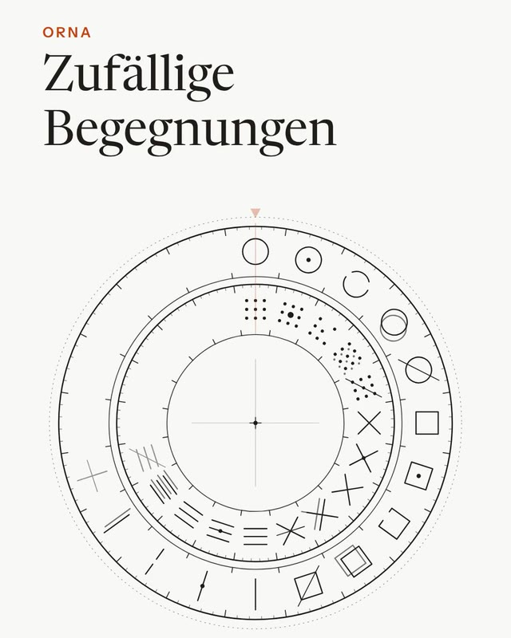
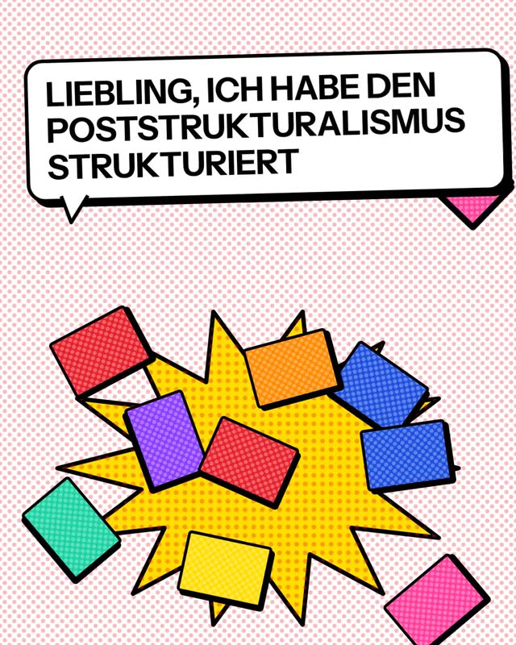
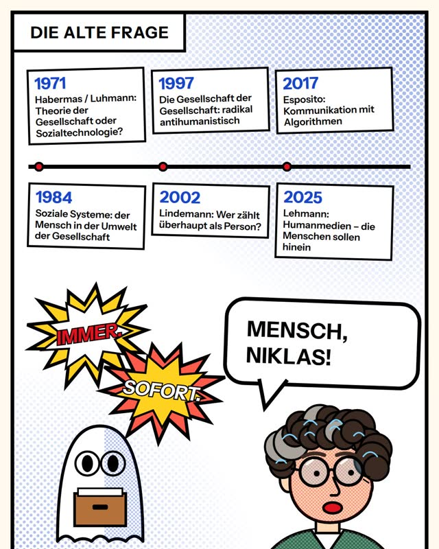

OMNA COLOR
Zwei Farbräder drehen gegeneinander. Zeigen sie zwei Farben, verbindet die Übung beide Themen, zeigen sie dieselbe Farbe, bleibt es beim reinen Thema. Gezogen wird aus 180 Gestaltungsübungen, mit dem Daumen oder per Knopf.
ÖffnenTests
Zwei Farbräder drehen gegeneinander. Zeigen sie zwei Farben, verbindet die Übung beide Themen, zeigen sie dieselbe Farbe, bleibt es beim reinen Thema. Gezogen wird aus 180 Gestaltungsübungen, mit dem Daumen oder per Knopf.
ÖffnenDrei Ringe drehen auf einer Achse: aussen die Zeit («Zu seiner Zeit», sieben Zyklen), in der Mitte die Form (die 40 Zeichen von ORNA), innen die Farbe (OMNA COLOR). Jeder Treffer öffnet sich im Rad, und in jedem Schritt geht es weiter: in den Zettelkasten, nach ORNA, zu OMNA COLOR oder zurück ins Rad.
ÖffnenEine 3D-Animation in sechs Stationen: Stelle, Objekt, Raum, Zeit, Werk, Atmosphäre. Ziehen dreht die Kamera, das Mausrad zoomt.
Öffnen
Ein Erklärvideo von gut 50 Sekunden: wie sich Künstler:innen und Theoretiker:innen auf zwei Ringen begegnen und nach welchen Kriterien die Paarungen geprüft sind. Ohne Ton.
Öffnen
Ein Comic-Video von gut zwei Minuten: wie zwölf poststrukturalistische Positionen mit zwei Prüfrastern geprüft wurden, dem Raster «Nebeneinander und Nacheinander» und dem «Verteilapparat des Körpers». Ohne Ton.
Öffnen Studie als PDF
Ein Comic-Video in eigener Sache, gut drei Minuten: woran und warum ich seit einigen Monaten arbeite – die alte Frage nach dem Menschen bei Luhmann, der stille, nicht wahrgenommene Körper und zwei Prüfraster. Ohne Ton.
ÖffnenKein Rhythmus und keine Ankündigungen. Eine kurze Mail, wenn ein Raster, eine App oder ein Text so weit ist, dass man damit arbeiten kann.
Der Link öffnet eine fertige Mail, du musst sie nur abschicken. Austragen mit einer Antwort; die Adresse bleibt bei mir und wird nicht weitergegeben.